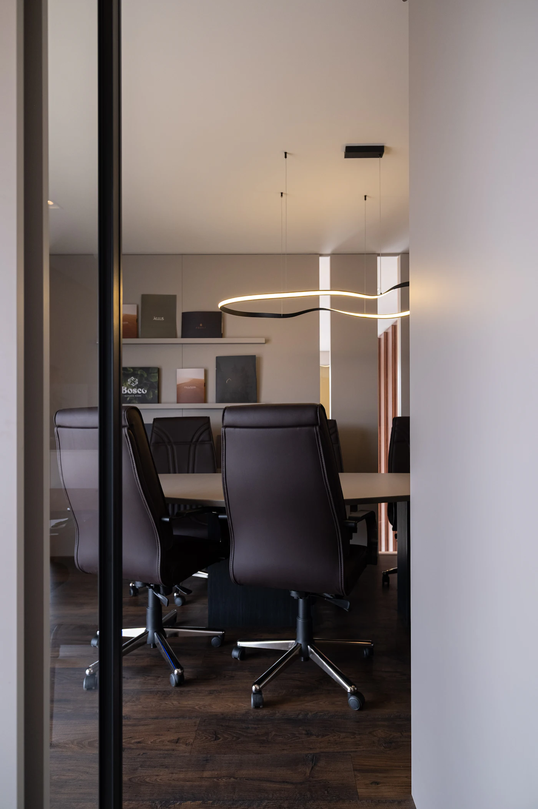

Comece pelo diagnóstico, aprofunde com mentoria individual ou escolha um tema específico da sua carreira.
Separado por tipo. Clique ao lado e veja só o que interessa.
Comece pelo IPC Essencial. Ele mostra onde estão seus gargalos.
O IPC Completo inclui uma devolutiva individual de 50 minutos.
A Mentoria ACT trabalha o seu plano, sessão a sessão.